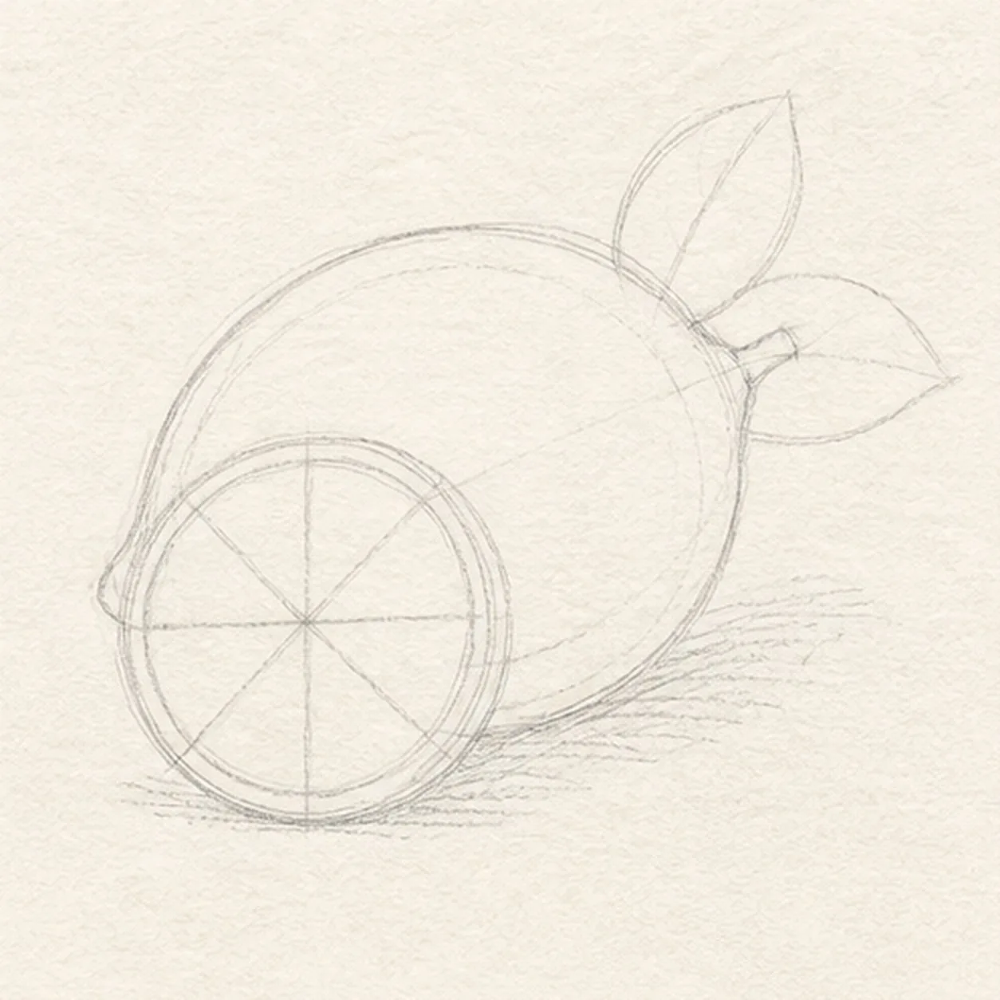
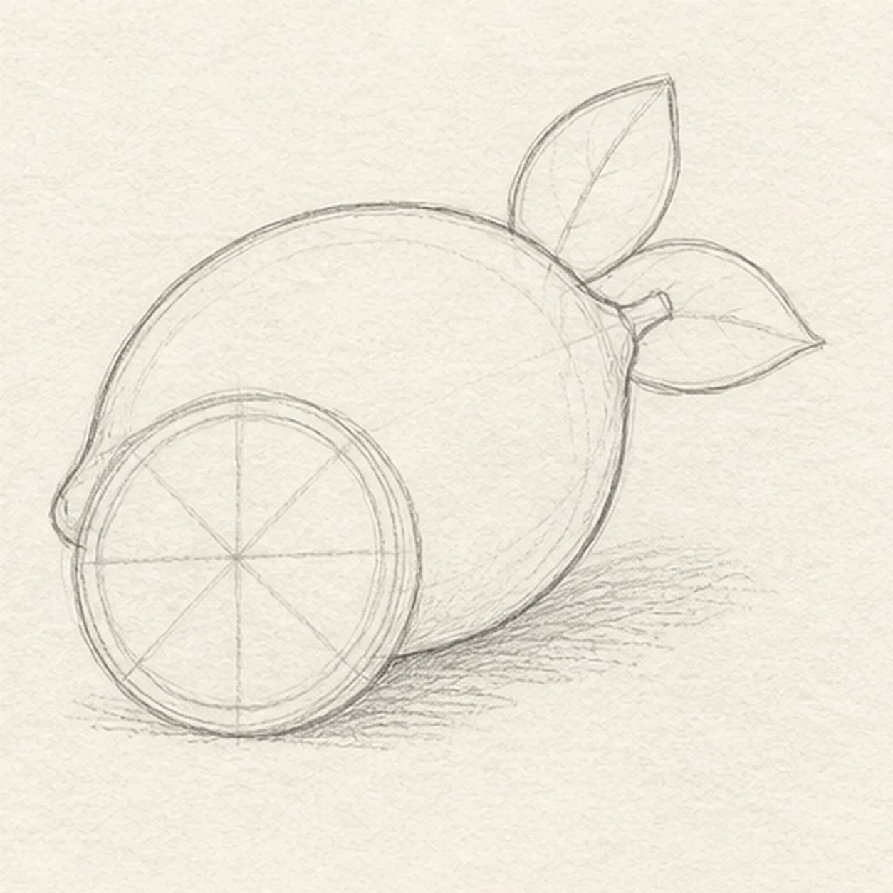
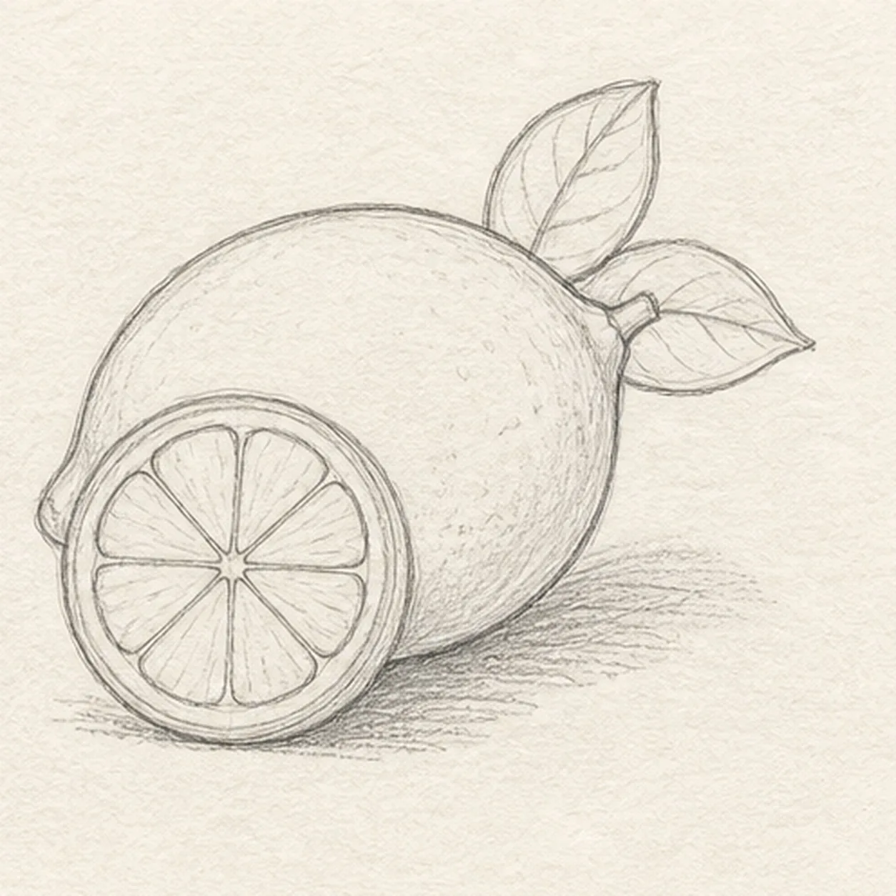
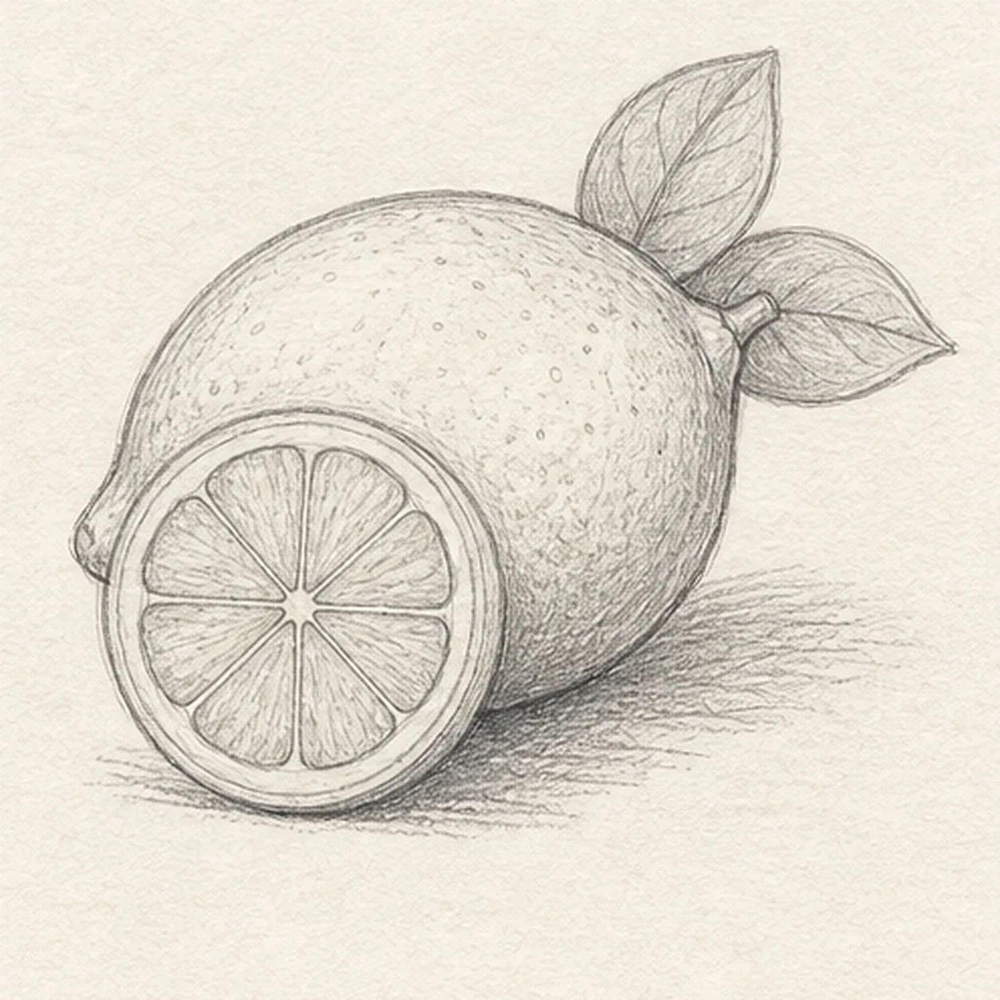
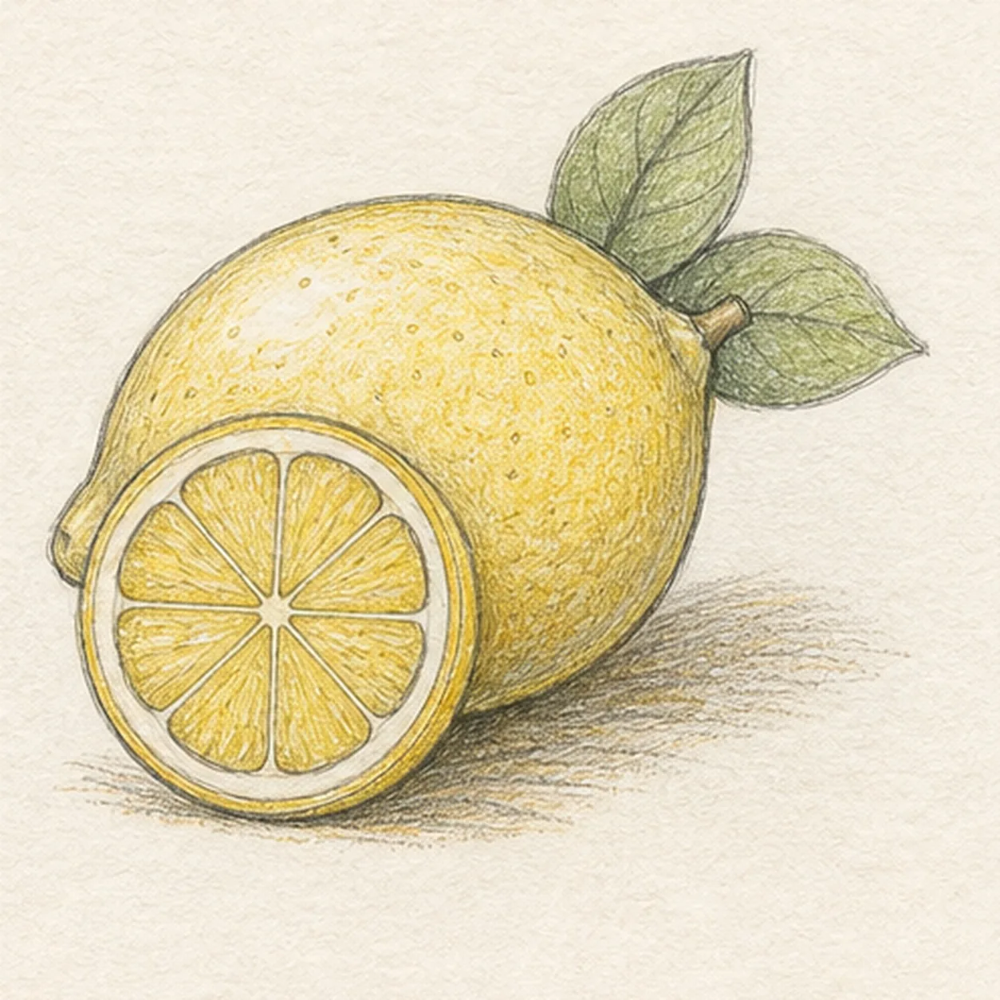

From the archive
Let's draw a lemon with a slice and leaves
Treat this as one small practice round: build the subject lightly, notice the shapes, then darken only the lines that help the finished sketch.
-
01

Map the citrus arrangement
Use pale graphite to place one angled lemon envelope, the full foreground slice circle, one short stem, exactly two leaf footprints, eight radial slice divisions, open highlights, and a broken shadow footprint.
Sketch tip: Ghost the lemon oval and slice circle two or three times before touching down. Reserve the entire slice in front of the fruit now, and aim the eight segment guides from one shared center so no keeper line needs erasing later.
-
02

Shape the lemon and slice
Wrap the guides with one tapered whole lemon, one short stem, exactly two leaves, and one circular slice leaning in front while preserving every segment, highlight, and shadow route.
Sketch tip: Rotate the page for the long fruit contour and stop it cleanly behind the slice. Compare the negative spaces above and below each leaf so the pair feels attached to the same stem instead of floating.
-
03

Divide the citrus and leaves
Clarify the doubled rind, exactly eight citrus segments, simple veins in both leaves, and clean overlap breaks on their reserved guides.
Sketch tip: Divide the slice into quarters first, then split each quarter once to get eight wedges. Keep a narrow strip of paper between the segment tips and center so the juicy pulp stays readable at thumbnail size.
-
04

Build the peel texture
Add sparse rind dimples, curved graphite hatching, open paper highlights, and the established broken shadow without changing the fruit, leaf, or segment counts.
Sketch tip: Wrap short hatching around the lemon instead of shading straight across it, and vary the dimple spacing rather than covering every patch. Let the shadow break beneath the slice and fruit so the paper can breathe.
-
05

Layer the sunny citrus color
Glaze lemon yellow over the established fruit and slice, leaf green over both leaves, and warm ochre near the rind and shadow while preserving graphite texture and eight segment boundaries.
Sketch tip: Build two light pencil layers that follow the fruit curve and segment wedges. Leave the upper fruit, rind edge, and leaf midribs lighter so the color stays fresh instead of waxy or flat.
-
06

Brighten the lemon finish
Strengthen selected keeper contours, deepen the existing rind texture and shadow, balance the established yellow, green, and ochre, clarify the same highlights, and soften only pale guides that distract.
Sketch tip: Count one whole lemon, one slice, two leaves, and eight segments before stopping. You can change the leaf tilt or color temperature in your own version, but keep the slice overlap and radial spacing clear.